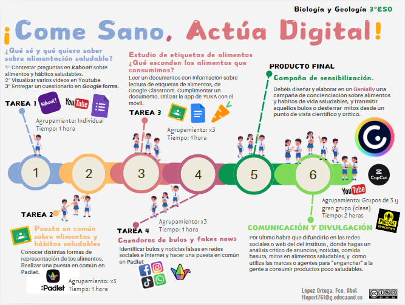

¡Hola a todos y todas! Bienvenidos a “Come sano y actúa digital”. Como vuestro profesor en este reto, no quiero que os sentéis a escuchar una charla más sobre nutrición. Quiero que os convirtáis en los arquitectos de vuestra propia imagen y en referentes de vuestra comunidad.
Este es el desafío que tenéis por delante:
Vuestro Gran Objetivo: De "Seguidores" a "Líderes de Opinión"
En este proyecto, tu misión es dejar de ser un consumidor pasivo de lo que ves en el feed de tus redes para convertirte en un creador crítico. Vas a diseñar una campaña de sensibilización real que ayude a otros jóvenes de tu edad a no dejarse engañar por promesas falsas.

Para lograrlo, vamos a seguir este recorrido:
1. El Espejo de mis Ideas (Punto de partida)
Antes de nada, vamos a mirar qué hay en nuestra mochila. ¿Qué crees que es realmente "estar sano"? ¿Es lo que dice ese influencer de fitness o lo que ves en la publicidad de suplementos? Empezaremos detectando qué sabemos (y qué creemos saber) para ver desde dónde partimos.
2. El Laboratorio de Modelos: ¿Quién tiene la razón?
No todo lo que nos han contado siempre es la verdad absoluta. Vamos a analizar de forma crítica cómo se nos ha enseñado a comer a lo largo del tiempo. Compararemos tres modelos visuales clave:
La Pirámide de los Alimentos: La de toda la vida, ¿sigue siendo válida?
La Rueda Alimentaria: Una forma distinta de agrupar lo que comemos.
El Plato de Harvard: La tendencia actual que está revolucionando los comedores.
Analizaremos cuál de estos modelos encaja mejor con un estilo de vida activo y con lo que realmente necesita nuestro cuerpo.
3. "Caza-Bulos": Análisis de Mitos
¿Es verdad que los hidratos por la noche engordan? ¿Necesitas batidos de proteínas nada más empezar el gimnasio? Veremos un vídeo impactante sobre los mitos y bulos más virales en alimentación. Vuestro trabajo será diseccionarlo, contrastar los datos y aprender a razonar por qué nos intentan colar esos engaños.
4. Acción: Vuestra Campaña de Sensibilización
Con todo el conocimiento anterior y vuestro talento digital, crearéis la Campaña Final. Usaremos herramientas de diseño, vídeo y redes sociales para lanzar mensajes potentes que ayuden a vuestros compañeros a mejorar su autoimagen y su salud, rebatiendo los mitos que hayamos detectado.
Vuestra voz es la que más cuenta. Si conseguís que vuestro grupo de amigos coma mejor porque confía en vuestra información, habréis ganado el reto.
¿Estáis listos para empezar a investigar qué hay de cierto tras los filtros de Instagram?